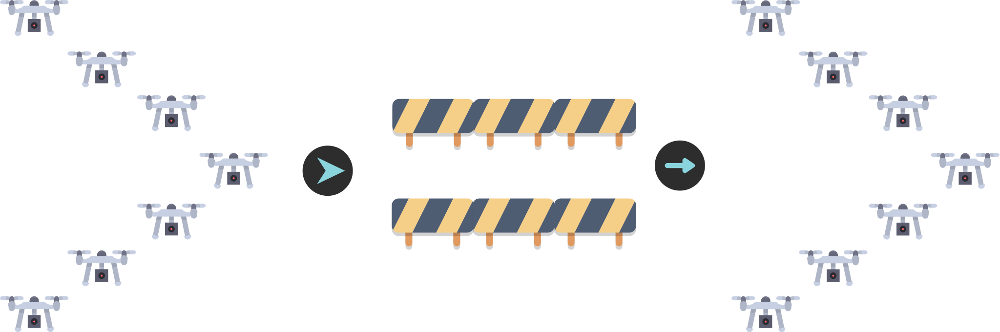
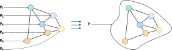
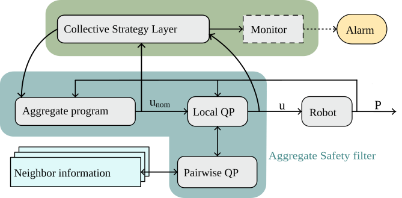
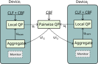
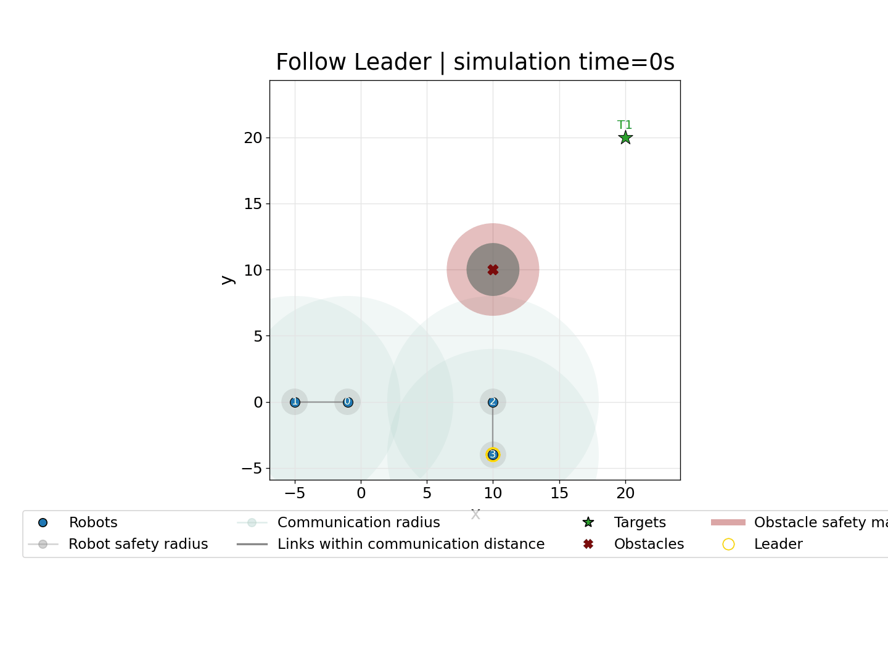
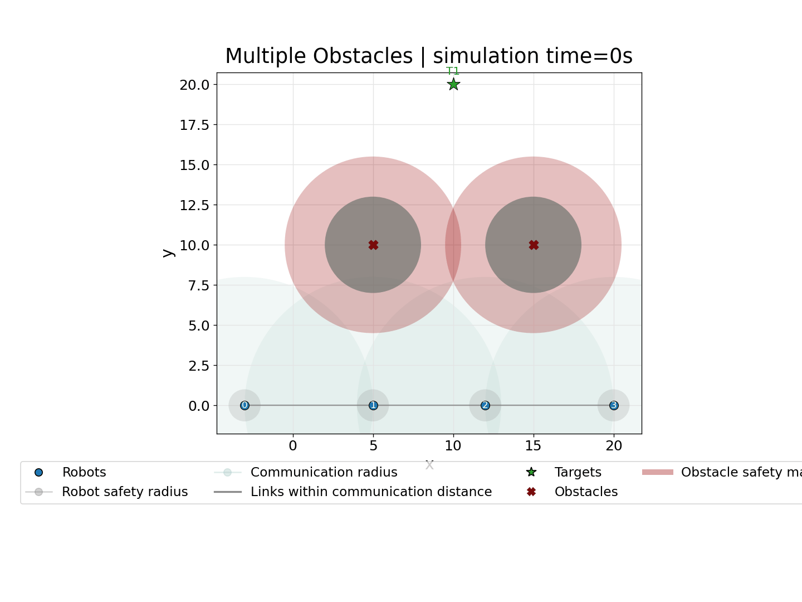

Toward Safe Aggregate Computing:
A Distributed Control-Theoretic Safety Filter for Robot Swarms
Angela Cortecchia1, Alessandro Papadopoulos2, Danilo Pianini1
*1 Department of Computer Science and Engineering (DISI)
Alma Mater Studiorum – University of Bologna - Cesena, Italy
*2Department of Computer Science and Engineering
Mälardalen University, Västerås, Sweden
Programming adaptive robot swarms safely
Collective behavior and safety are both required

In applications such as search and rescue or environmental monitoring, groups of robots must:
- coordinate toward a common objective;
- adapt to changing conditions;
- remain safe while doing so.
A collective strategy may correctly describe where the swarm should go, while still producing unsafe motion on the way.
We need both an expressive way to specify collective behavior and a mechanism that enforces safety during execution.
Aggregate Computing
Programming the collective, not each robot

Aggregate Computing raises the programming abstraction from individual devices to collective behavior.
Developers compose computational fields: distributed values that evolve through local interaction across the network.
One global program is executed locally by all robots through repeated neighbor-to-neighbor interaction.
How AC executes
Sense → compute → communicate / act
Each robot repeatedly:
Senses local inputs and the latest messages from neighbors.
Computes the aggregate program using local state and neighbor information.
Communicates / acts by sharing the updated state and applying the local output.
Round-based model
Global self-organizing behavior emerges from repeated local interaction.
The limitation: self-stabilization is eventual
AC provides reusable coordination patterns with self-stabilizing behavior.
Under stable inputs and network topology, the system can recover from transient changes and eventually converge to a stable collective state.
But during that transient phase — or while the environment keeps changing — the aggregate program may continue adapting without guaranteeing that every physical constraint is respected.
For robot swarms, eventual convergence is not enough: safety must also hold before convergence.
The missing layer: safe actuation
Collective level
The aggregate program computes the intended motion:
[ u_{nom} ]
It says where the robot would like to go.
Control level
A safety filter checks whether that command is admissible.
It outputs the command actually applied:
[ u ]
The idea is not to replace AC, but to filter its commands before actuation.
Two control intuitions
CLF: progress
A Control Lyapunov Function measures distance from a goal.
[ V = 0 \quad \text{at the target} ]
The controller should make (V) decrease.
CBF: safety
A Control Barrier Function defines a safe set.
[ h \ge 0 \quad \text{means safe} ]
The controller should prevent (h) from becoming negative.
CLFs encode what should happen; CBFs encode what must not happen.
The safety filter
Stay as close as possible to the aggregate command, but never violate active hard safety constraints.
Proposed architecture

Collective strategy and physical safety are kept modular.
Distributed safety constraints

Local constraints
- target convergence;
- obstacle clearance;
- speed limits.
Pairwise constraints
- inter-robot collision avoidance;
- selected communication-link preservation.
Pairwise constraints expose the distributed structure of the problem.
What is enforced?
The active constraints depend on the collective task being executed.
Proof of concept
Collektive specifies the aggregate behavior → Alchemist simulates the swarm → Gurobi solves the QPs
This is a proof of concept: the goal is to validate the architecture, not yet to provide a scalability benchmark.
Scenario 1: different targets

Different nominal goals, shared safety constraints: robots reach their targets while avoiding obstacles and collisions.
Scenario 2: leader election and connectivity

The aggregate strategy adapts when clusters merge, while the safety filter preserves selected communication links.
Scenario 3: when safety reveals a strategy limit

The filter correctly blocks unsafe motion, but a direct target policy can get trapped in a local minimum.
Takeaways
Aggregate Computing gives a high-level language for adaptive collective behavior.
CLF/CBF filtering turns progress and safety requirements into constraints before actuation.
Distributed optimization exploits local and pairwise structure through neighbor exchanges.
Safe Aggregate Computing means keeping self-organization programmable without treating transient safety as an afterthought.
Next: scalability, communication overhead, richer swarm behaviors, and runtime strategy changes.
Thank you for the attention!
Reproducible experiments here:
angelacorte/experiments-2026-acsos-ws-carol